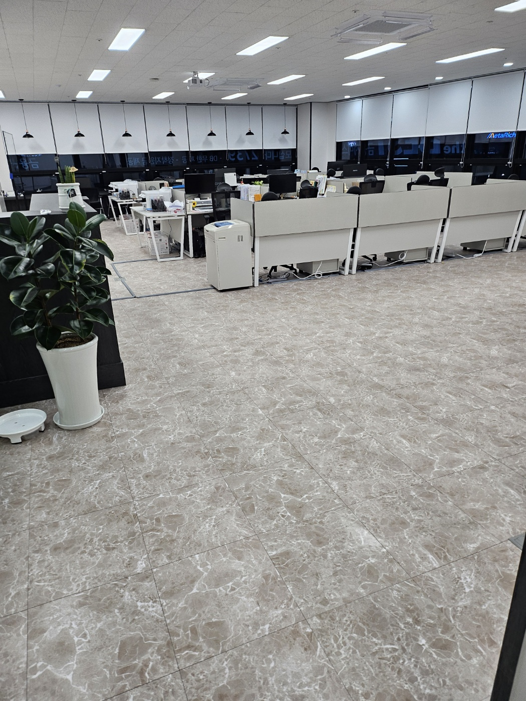
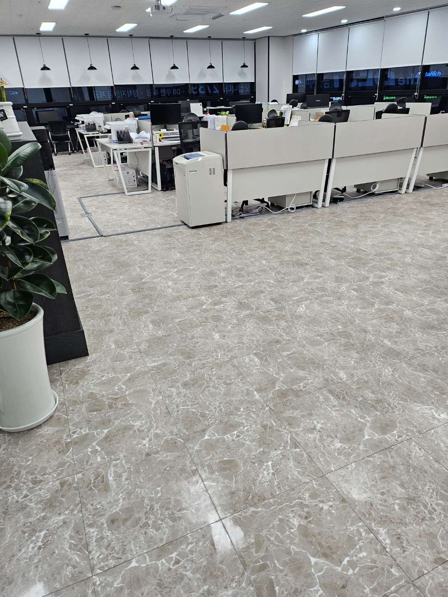
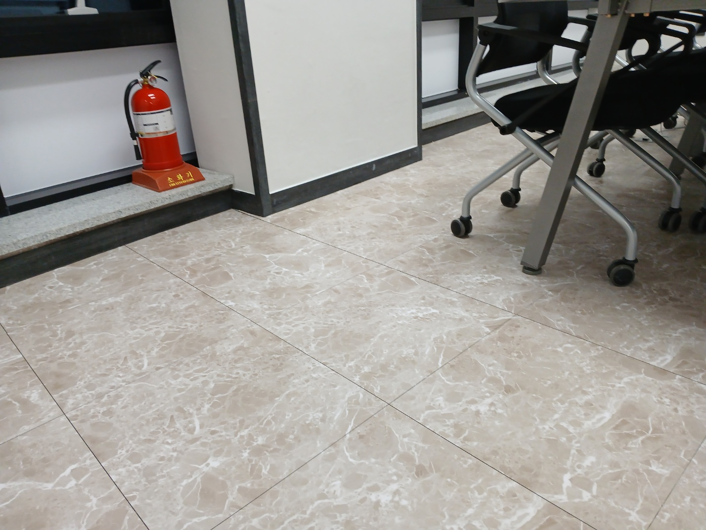
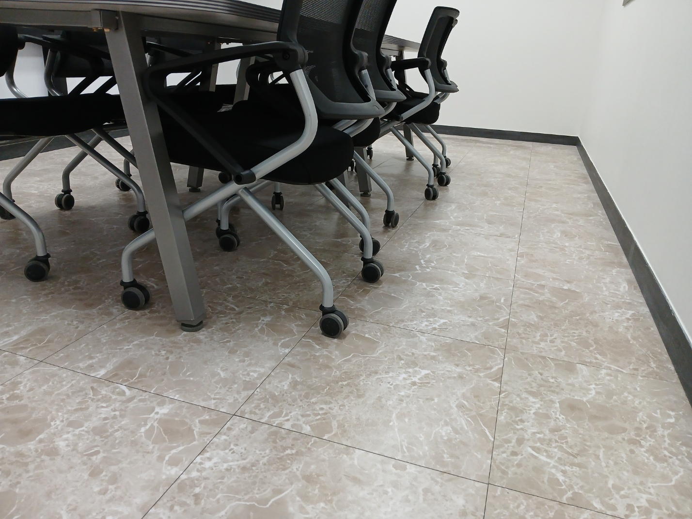
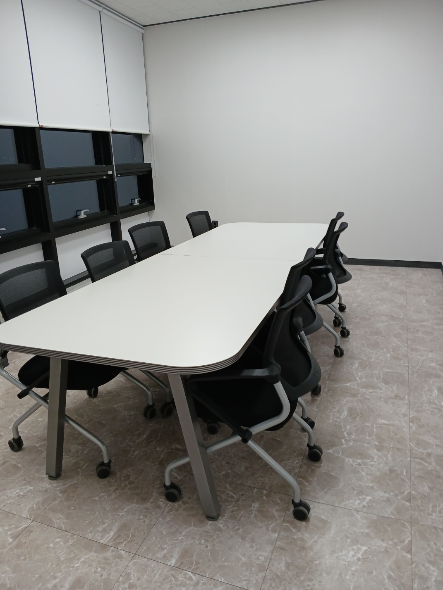
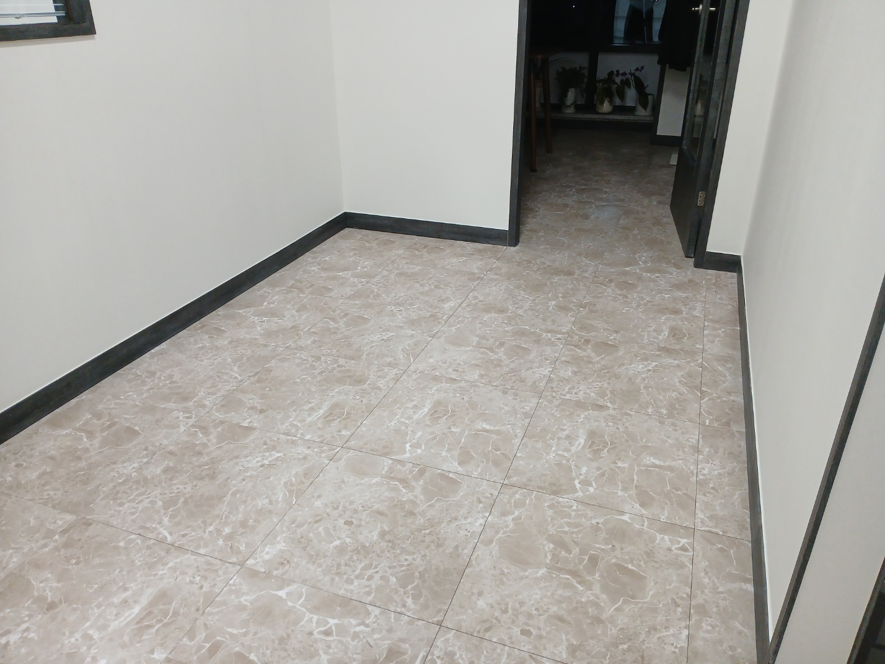
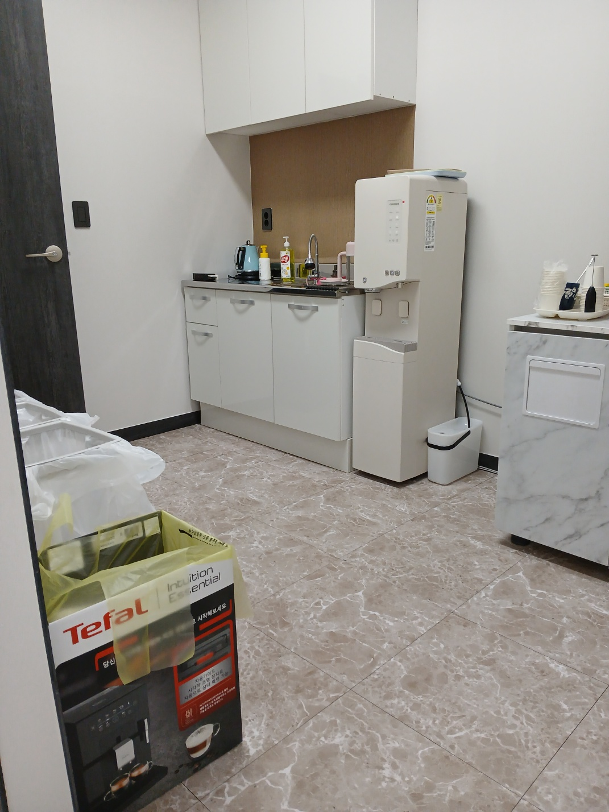
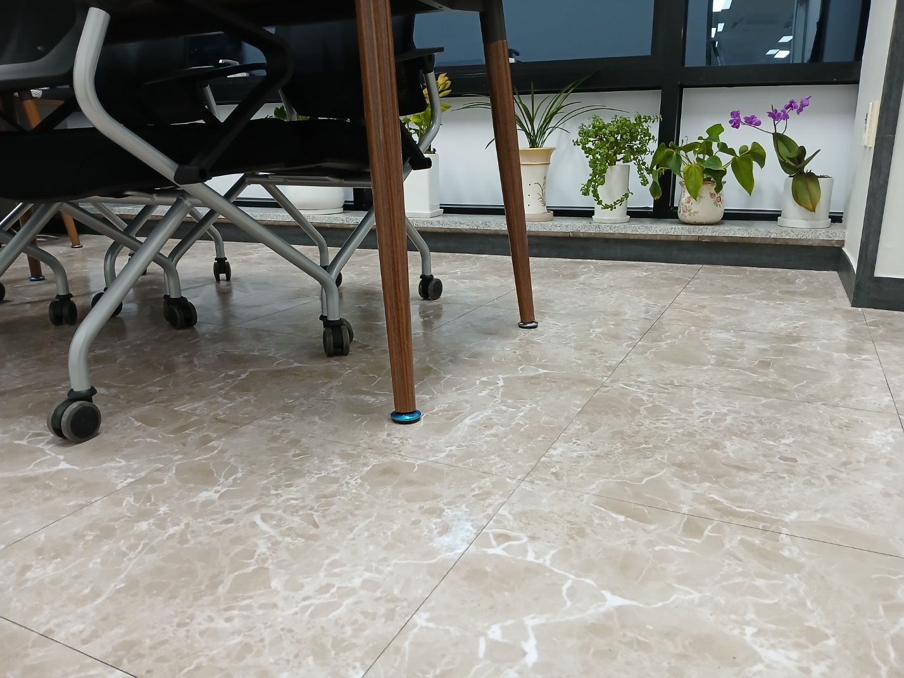
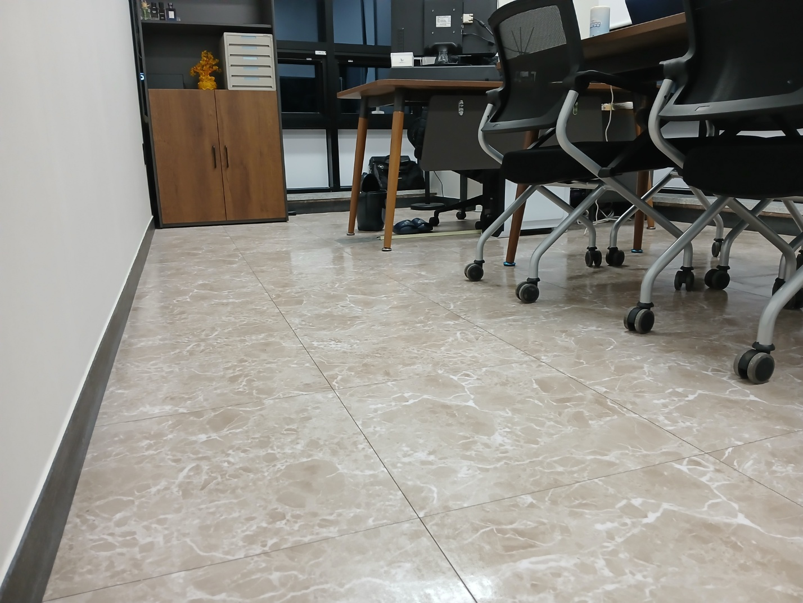

양산 기업체·사무실 현장을 실제 작업사진으로 소개합니다
이번 페이지는 퍼펙트케어가 관리한 양산 사무실 현장의 실제 사진을 바탕으로 구성했습니다. 회의실과 업무공간의 바닥, 테이블 주변, 복도와 계단, 화장실 등 사업장 안에서 반복적으로 관리가 필요한 공간을 중심으로 정리합니다.
정기청소는 일회성 대청소와 달리 현장 운영시간과 직원 수, 방문객 수, 바닥 오염 정도, 관리 범위를 함께 보고 관리 횟수와 동선을 잡는 것이 중요합니다.

사무실에서 자주 관리하는 공간



바닥은 동선과 가구 배치까지 고려해 관리합니다
사무실 바닥은 책상과 의자, 복합기, 회의테이블 등 가구가 많아 오픈 공간과 같은 방식으로 청소하기 어렵습니다. 눈에 보이는 통로뿐 아니라 의자 아래, 벽면 가장자리, 출입구 주변처럼 먼지가 모이기 쉬운 부분을 함께 확인합니다.
현장 상태에 따라 건습식 장비와 바닥관리 장비를 사용하고, 청소 후에는 바닥에 남은 오염과 물기 상태를 확인합니다.

화장실·계단·복도까지 함께 관리할 수 있습니다
기업체 정기청소는 사무실 내부만 따로 관리하기보다 화장실, 계단, 복도처럼 직원과 방문객이 함께 사용하는 공용공간을 묶어 관리하는 경우가 많습니다.
퍼펙트케어는 사업장 규모와 이용량을 확인해 필요한 범위를 정하고, 교육받은 직원이 현장별 관리 기준에 맞춰 작업합니다.

양산 사무실 청소 작업사진



정기청소 횟수는 현장마다 다르게 잡습니다
퍼펙트케어의 사업장 정기청소는 현장 상황에 따라 주 1회부터 주 6회까지 상담 가능합니다. 단순히 면적만 보는 것이 아니라 사업장 규모, 직원 수, 방문객 수, 운영시간, 바닥 오염 정도, 화장실 이용량, 관리해야 할 공간 범위를 함께 확인합니다.
양산 사무실 정기청소 무료 방문견적
현장 규모와 관리 범위를 확인한 뒤 안내드립니다. 대량건도 문제없습니다.